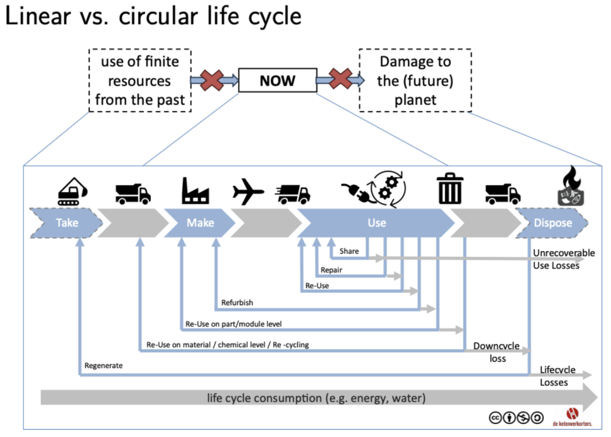
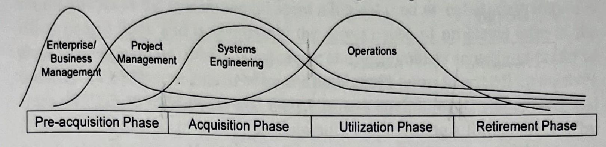
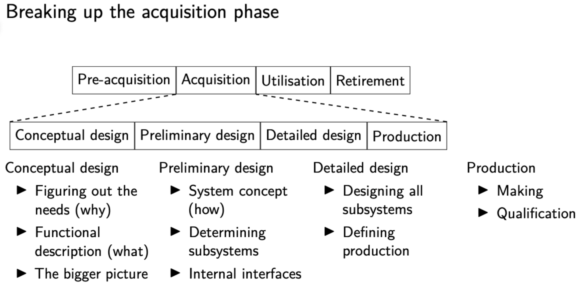
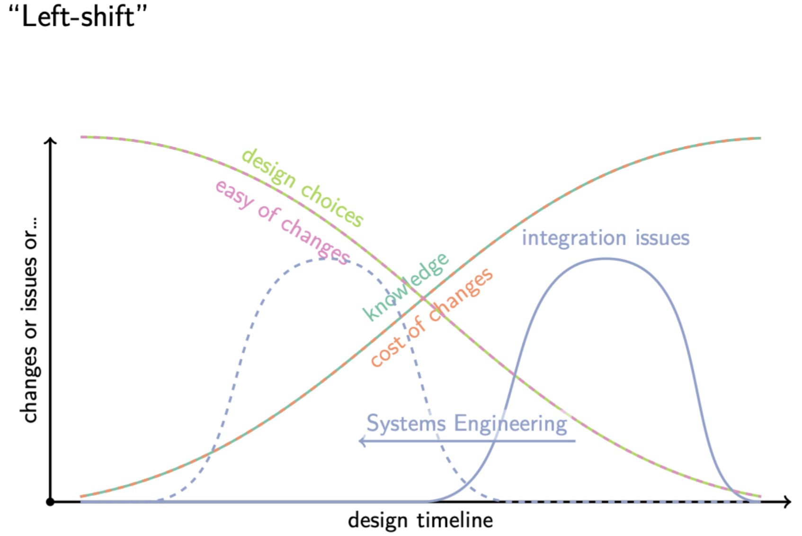
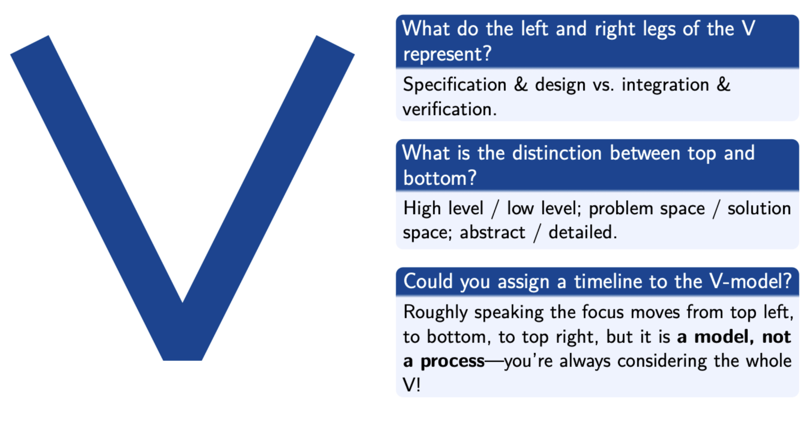
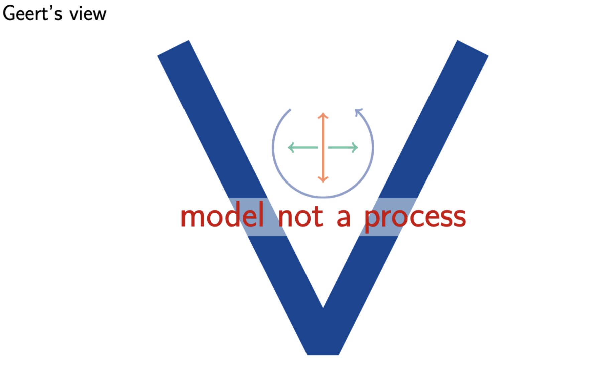
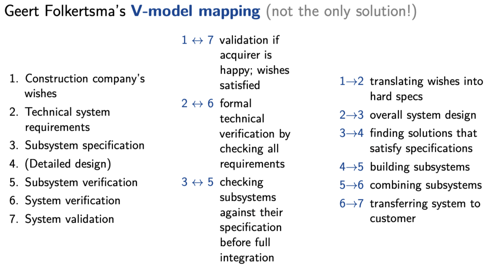

Course Intro
Systems Engineering is a compulsory course I have to pursue in my Robotics Master’s at Twente. It’s taught by dr. ir. Geert Folkertsma. I really like it because I feel it goes in depth into how anyone who wants to be in a management position (who calls the shots) should think.
Systems Engineering is....
a transdisciplinary and integrative approach to enable the successful realisation, use and
retirement of engineered systems, using systems principles and concepts, and scientific,
technological and management methods.
Basically, it aims to prevent errors from failures arising from complexity, (mis)communication and (mis)understanding and people that do it would argue it’s something that you learn by doing.
For example, a question that could be asked during this course is:
What is the difference in the life cycle of an EUV lithography machine by ASML, and an electric car by Lightyear? considering design, production and use?
Low-volume vs. high-volume sales, so non-recurring engineering costs have to be earned back (amortised) over 20 machines vs. 2000 cars.
Focus on Life Cycle
Systems engineering is focused on the entire system life cycle and takes this life cycle into consideration during decision-making processes. A lack of consideration of whole-of-life considerations can often lead to larger-than-expected costs in the Utilization Phase to be met from budgets that are insufficient to keep systems in service. A life-cycle focus requires a focus on the capability system throughout its life cylce, not on the product throughout its acquisition.
The life of a system
Idea - Guide dogs are difficult to train. Can’t we make a robotic replacement?
Design - A white cane with vision and wheels that can steer the person in the right direction
Production - Cost should be less than $10.000
Use - Hardware should last > 5 yrs; regular software updates for new functionalities
Retirement - Recycling??

Questions we should ask about the system
What are the needs?
Who is going to use it?
Who else has an interest on the system?
What are the constraints of the system?
What is the business case?
When is the system good enough?
And so we divide it in 4 phases:
- Pre-acquisition - why do they want this? Here begins the life cycle with an idea for a system being generated as a result of business planning. Early consideration of the possible options results in the confirmation of the early business needs for the system and justify expanditure of organizational resources on acquisition of the system. In some instances, the Pre-acquisition Phase may determine that it may not be feasible or cost-effective to proceed to acquisition. In that sense then, the Pre-acquisition Phase is where organisations expend research and development funds to ensure that only feasible, cost-effective projects are taken forward.
- Acquisition - in this phase the systems engineer is the most active, but they will focus on the whole lifecycle. Acquisition Phase is focused on bringing the system into being and into service. This would normally involve defining the system in terms of business needs and requirements, stakeholder needs and requirements, and system requirements and then engaging a contractor do develop/deliver the system.
- Utilization - how does the operation work? The system remains in service during the Utilization Phase until the business has no further need for it, or it can no longer meet the functions required or is no longer cost-effective. During utilization, the system may undergo a number of modifications and upgrades to rectify performance shortfalls, to meet changing operational requirements or external environments to enable ongoing support for the system to be maintained, or to enhance current performance or reliability.
- Retirement - what happens at the end? Following operational use and system support, the system is eventually phased out and retired from service — therefore the Retirement Phase concludes the life cycle. If the business need for the capability still exists in the organization, the conclusion of one system life cycle marks the start of another and the process begins again.

As illustrated in the Figure above, systems engineering is predominantly related to the Acquisition Phase and, to a lesser extent, the Utilization Phase of the system life cycle.
The significance of focusing on the system life cycle is that decisions made early in Conceptual Design are informed by the activities proposed to be conducted later in the Acquisition Phase and in the Utilization Phase.
Acquisition Phase

As illustrated above, the Acquisition Phase comprises of four main activities.
- Conceptual design: what? It is aimed at producing a set of clearly defined requirements, at the system level, and in logical terms. Although clearly defining the requirements of the system would seem a logical (and essential) first step, it is often poorly done and is commonly the direct cause of problems later in the development process. Business managers and stakeholders sometimes prefer to describe their requirements in loose and ambiguous terms to protect themselves from changes in their needs and their business environment. The Conceptual Design process aims to avoid this ambiguity by providing a formal process by which the Business Needs and Requirements (BNR) are articulated and confirmed by business management, and then elaborated by stakeholders at the business operations level into a set of Stakeholder Needs and Requirements (SNR), which are further elaborated by requirements engineers into a set of system requirements in the System Requirement Specification (SyRS). The SyRS is the key element of what is called the Functional Baseline(FBL), which describes the whats and whys of the system.
- Preliminary design: how? The aim is to convert the FBL into an upper-level physical definition of the system configuration or architecture (the hows of the system). Preliminary Design is therefore the stage where logical design is translated into physical design; where focus shifts from the problem domain into the solution domain. The result of Preliminary Design is a subsystem-level design known as the Allocated Baseline (ABL) in which the logical groupings defined in the FBL have been defined in more detail, and then re-grouped and allocated to subsystem-level physical groupings (called Configuration Items (CI)), which combine to form the upper-level physical design of the system. At the centre of the ABL are a series of Development Specifications, which contain the subsystem-level requirements grouped by CI. The ABL represents a subsystem-level architecture that meets the requirements of the system-level architecture contained in the FBL. The ABL is formalized at the Preliminary Design Review(PDR). The PDR ensures the adequacy of the Preliminary Design effort prior to focusing on detailed design. PDR is designed to assess the technical adequacy of the proposed solution in terms of technical risk and the likely satisfaction of the FBL. PDR also investigates the identification of CI interfaces and the compatibility of each CIs.
- Detailed design: how to keep everything aligned? The ABL developed during Preliminary Design is used in the Detailed Design and Development process to complete development of the individual subsystems, assemblies, and components in the system. Prototyping may occur and the system design is confirmed by test and evaluation. The definition of the system at this stage (subsyems, assemblies, and components) should be sufficiently detailed to support the commencement of the Construction and/or Production activities. The PBL is established at the Critical Design Review (CDR). The CDR is the final design review resulting in the official acceptance of the design and the subsequent commencement of Construction and/or Production activities; CDR evaluates the detailed design; determines readiness for production/construction; and ensures design compatibility, including a detailed understanding of all external and internal interfaces.
- Production: integration plan, verification. The final activity — system components are produced in accordance with detailed design specifications in the PBL and the system is ultimately constructed in its final form. Formal test and evaluation activities (acceptance tests) will be conducted to ensure that the final system configuration meets the requirements in the SyRS. Construction/Production and the Acquisition Phase end with the Formal Qualification Review (FQR), which provides the basis upon which the customer accepts the system from the contractor.
Left Shift

Left shift is making early design choices with the later phases in mind, hoping to prevent integration issues, by identifying potential issues early on and making changes when that is still easy and cheap.
V-model


So my professor thinks we should always, ALWAYS look at the big picture. It’s not a process, but a model.

Some Systems Engineering experts have defined the 'extended V-model’. How does this correspond to the V-model and lifecycle as used in this course?
This suggests that the V-model is a process, which it is not. In this course, we consider the utilisation and retirement as lifecycle phases, which may impact the design or lead to requirements, which have their own place in the normal V-model.
Summary
Summary
System life cycle - to consider the whole life of the system, from conception to retirement
Systems Engineering process - to break up the design, top-down, to improve the chance of a working system.
V-model - a way to talk about the hierarchy of the system and its design.